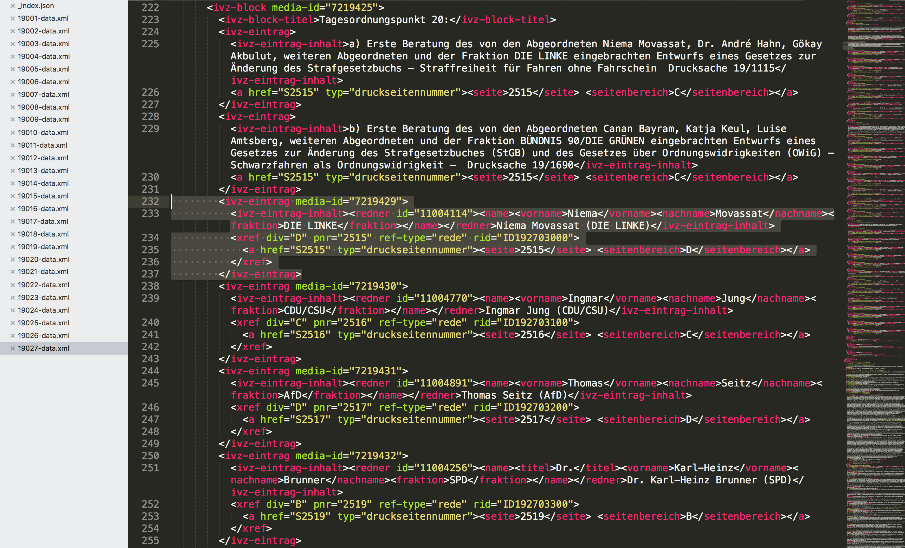

<!DOCTYPE html>

<meta charset="utf-8">
<title>Opening Up Parliamentary Debate Videos</title>

<script type="text/javascript" src="./data/js/jquery.js"></script>

<section>
    <h4 style="margin-top:30px; text-align: center; font-size: 37px; line-height: 70px;">Joscha Jaeger & Philo van Kemenade</h4>
    <h1 style="margin-top:560px; font-size: 90px;">Opening Up Parliamentary Debate Videos</h1>
	<h3 style="margin-top:30px; font-size: 70px; text-align: center; ">using Transcripts and Open Data</h3>
    <!--<h4 style="margin-top:140px; text-align: center; font-size: 40px; line-height: 100px;">Mozilla Festival, London, 26.-28. Oct 2018</h4>-->
    
    <footer style="text-align: left; width: 90%;">← Use arrow keys to navigate slides →</footer>
    <details></details>
</section>

<section>
    <h3 class="chapter">Session Structure (11:15 AM until 12:45 PM)</h3>
    <ul>
        <li>How to work with parliamentary data (proceedings, videos, open data) & Use Case German Parliament</li>
        <li>Collaborative project idea: Open Parliament TV<br>
        + identify important challenges with the group</li>
        <li>Arrange in groups and discuss challenges</li>
        <li>Wrap-up, Documentation, Call for action</li>
    </ul>
    <details></details>
</section>

<!--
<section>
    <h3 class="chapter"><a href="https://prototypefund.frametrail.org/player/?project=2&hypervideo=2" target="_blank">Recap: Prototypefund Demo</a> (FrameTrail)</h3>
    <iframe src="https://prototypefund.frametrail.org/player/?project=2&hypervideo=2"></iframe>
    <details></details>
</section>
-->

<section>
    <h1 style="margin-top:200px; font-size: 100px;">How to work with parliamentary <br>video & proceedings <br><br>
    Use Case<br> "Parliamentwatch goes Video"</h1>
    <details></details>
</section>

<section>
    <h3 class="chapter">Parliamentwatch goes Video - What?</h3>
    <ul>
        <li>make parliamentary speeches more accessible and understandable in an interactive video format</li>
        <li>motivate citizens to permanently and critically engage with political debates <br>(beyond sharing short, spectacular moments)</li>
        <li>contribute to a more transparent parliament</li>
    </ul>
    <details></details>
</section>

<section>
    <h3 class="chapter">Parliamentwatch goes Video - How?</h3>
    <ul>
        <li>provide an interactive transcript, based on the plenary protocol (= more than just the actual speech)</li>
        <li>automated linking with additional information: <br>
        plenary protocols, relevant documents, MP profiles, Wikipedia / WikiData (potentially later: curated reports, analysis or fact checking formats)</li>
        <li>"Citizen Heckling / Interjection Button": <br>ask questions directly to the speaker, at a specific point of time in the speech, which are then forwarded via abgeordnetenwatch.de to the MPs offices (moderated)</li>
    </ul>
    <details></details>
</section>

<section>
    <h1 style="margin-top:360px; font-size: 120px;">Problem:</h1>
    <h2 style="margin-top:80px; font-size: 80px;">Where do we get the data <br>(videos, protocols, relevant documents)?</h2>
    <details></details>
</section>

<section>
    <h3 class="chapter">bundestag.de/service/opendata</h3>
    
    <details></details>
</section>

<section>
    <h3 class="chapter">Parliamentwatch goes Video - Workflow</h3>
    
    <details></details>
</section>

<!--
<section>
    <h3 class="chapter">Parliamentwatch goes Video - Workflow</h3>
    
    <details></details>
</section>
-->

<section>
    <h3 class="chapter">Parliamentwatch goes Video - Analysis</h3>
    <video style="margin-top:-40px;" controls src="data/analysis.mp4"></video>
    <h4 style="font-size: 40px;"><a href="https://github.com/parliamentwatch/OpenParliamentVideo-Analysis" target="_blank">https://github.com/parliamentwatch/OpenParliamentVideo-Analysis</a></h4>
    <details></details>
</section>

<section>
    <h3 class="chapter">Parliamentwatch goes Video - Platform</h3>
    <video style="margin-top:-40px;" controls src="data/search.mp4"></video>
    <h4 style="font-size: 40px;"><a href="https://github.com/parliamentwatch/OpenParliamentVideo-Platform" target="_blank">https://github.com/parliamentwatch/OpenParliamentVideo-Platform</a></h4>
    <details></details>
</section>

<section>
    <h1 style="margin-top:360px; font-size: 120px;">Next steps:</h1>
    <details></details>
</section>

<section>
    <h3 class="chapter">Next steps</h3>
    <ul>
        <li>Integration into the existing Parliamentwatch platform (MP profiles, search)</li>
        <li>Index transcripts using Solr / Elasticsearch</li>
        <li>Optimize workflow <br>(auto-index new speeches as they become available, tweak <a href="https://www.readbeyond.it/aeneas/" target="_blank">Aeneas</a> configuration)</li>
        <li>SEO & PR Magic</li>
    	<li>➜ MVP Launch</li>
    </ul>
    <details></details>
</section>

<section>
    <h3 class="chapter">Next steps</h3>
    <h4>Video recordings + transcripts, structured in <br>electoral periods, sessions, agenda items, speeches, ...</h4>
    <div class="incremental">
	    <h1 style="margin-top:200px; font-size: 100px;">Collaborative project idea: <br>
    	Open Parliament TV</h1>
	</div>
    <details></details>
</section>


<section>
    <h3 class="chapter">Collaborative project idea: Open Parliament TV</h3>
    <h4>Goal: Build set of simple, interoperable open source components for city councils, other national parliaments, EU parliament</h4>
    <ul>
    	<li>Identify and contact stakeholders</li>
    	<li>Discuss what's needed & agree on specific steps</li>
    	<li>Collaborative project proposal, involving academic institutions, NGOs, activists (+ potentially parliaments)</li>
        <li>Kickoff: Right now & right here</li>
    </ul>
    <h4 style="margin-top:120px; text-align: center; font-size: 40px; font-weight: 300;"></h4>
    <details></details>
</section>

<section>
    <h3 class="chapter"><a href="https://OpenParliamentTV.github.io/proposal" target="_blank">https://OpenParliamentTV.github.io/proposal</a></h3>
    <iframe src="https://OpenParliamentTV.github.io/proposal"></iframe>
    <details></details>
</section>


<!-- Your Style -->
<!-- Define the style of your presentation -->

<style>
  @font-face {
  font-family: 'Droid Sans';
  font-style: normal;
  font-weight: 400;
  src: local('Droid Sans'), local('DroidSans'), url('./data/fonts/DroidSans.ttf') format('truetype');
  }
  @font-face {
    font-family: 'Droid Sans';
    font-style: normal;
    font-weight: 700;
    src: local('Droid Sans Bold'), local('DroidSans-Bold'), url('./data/fonts/DroidSans-Bold.ttf') format('truetype');
  }

  @font-face {
    font-family: 'Roboto Condensed';
    font-style: normal;
    font-weight: 300;
    src: local('Roboto Condensed Light'), local('RobotoCondensed-Light'), url('./data/fonts/RobotoCondensed-Light.ttf') format('truetype');
  }
  @font-face {
    font-family: 'Roboto Condensed';
    font-style: normal;
    font-weight: 400;
    src: local('Roboto Condensed Regular'), local('RobotoCondensed-Regular'), url('./data/fonts/RobotoCondensed-Regular.ttf') format('truetype');
  }


  html { background-color: #ecf0f1;}
  body { background-color: transparent; border: 10px solid #fff;}
  /* A section is a slide. It's size is 800x600, and this will never change */
  section {
      font-family: "Droid Sans","Helvetica Neue",Helvetica,Arial,sans-serif;
      font-size: 56px;
      color: #2c3e50;
      font-weight: 300;
  }
  h1, h2 {
    margin-top: 350px;
    text-align: center;
    font-size: 140px;
    color: #2c3e50;
    font-family: "Roboto Condensed","Helvetica Neue",Helvetica,Arial,sans-serif;
    font-weight: 300;
  }
  h3 {
    margin: 100px 20px 40px 70px;
    font-family: "Roboto Condensed","Helvetica Neue",Helvetica,Arial,sans-serif;
    font-weight: 300;
  }
  
  h3.chapter {
  	display: block;
  	margin: 30px 0 100px 0px;
  	color: #2c3e50;
    font-family: "Roboto Condensed","Helvetica Neue",Helvetica,Arial,sans-serif;
  }
  
  h3.chapter:after {
  	content: '';
  	display: block;
    position: absolute;
   	height: 30px;
    width: 96%;
    border-bottom: 6px dotted #cfcfcf;
  }

  h4 {
    font-weight: 300;
  }
  
  a {
  	color: #333;
  }

  ul, ol {
    margin: 60px 20px 65px 130px;
    color: #2c3e50;
  }
  
  ul li, ol li {
  	margin: 20px 0 40px 0;
    padding-left: 15px;
    font-weight: 300;
  }

  q {
    display: inline-block;
    width: 700px;
    height: 600px;
    background-color: #2c3e50;
    color: white;
    font-size: 60px;
    padding: 50px;
  }

  img, video {
    width: 99%;
    z-index: -1;
  }

  img.zoomhover {
    -moz-transition: all 300ms linear 0s;
    -webkit-transition: all 300ms linear 0s;
    -ms-transition: all 300ms linear 0s;
    transition: all 300ms linear 0s;
  }

  img.zoomhover:hover {
    z-index: 8 !important;
    width: 96% !important;
  }

  footer {
    position: absolute;
    bottom: 90px;
    right: 30px;
    font-size: 25px;
    font-weight: normal;
    color: #666;
  }

  /* Transition effect */
  /* Feel free to change the transition effect for original
     animations. See here:
     https://developer.mozilla.org/en/CSS/CSS_transitions
     How to use CSS3 Transitions: */
  section {
      -moz-transition: left 0ms linear 0s;
      -webkit-transition: left 0ms linear 0s;
      -ms-transition: left 0ms linear 0s;
      transition: left 0ms linear 0s;
      overflow: hidden;
  }

  /* Before */
  section { 
  	left: -150%;
  }
  /* Now */
  section[aria-selected] { left: 0; }
  /* After */
  section[aria-selected] ~ section { left: +150%; }

  /* Incremental elements */

  /* By default, visible */
  .incremental > * { opacity: 1; }

  /* The current item */
  .incremental > *[aria-selected] { font-weight: 300; opacity: 1; }

  /* The items to-be-selected */
  .incremental > *[aria-selected] ~ * { opacity: 0.2; }
  
  .logo {
  	position: absolute;
  	top: 20px;
  	right: 62px;
  	width: 120px;
  	z-index: 1000;
  	transition-property: all;
  	transition-duration: 800ms;
  }

  .logo.large {
  	top: 190px;
    right: 610px;
    width: 400px;
  }

  .logoList {
    height: 135px;
    margin-top: 100px;
  }

  .logoList img {
    height: 100%;
    width: auto;
    display: inline-block;
    margin: 10px 12px;
  }
  
  .rightLeft {
  	float: left;
  	width: 48%;
  	height: 100%;
  	padding: 1%;
  	text-align: left;
  	margin: 50px 0 80px 0;
  }
  
  .rightLeft img {
  	width: 88%;
  	padding: 3%;
  }
  
  .overlayCircle.yellow {
  	position: absolute;
  	background-color: rgba(245, 190, 21, .4);
  	border: 7px solid rgb(245, 190, 21);
  	-moz-border-radius: 50%;
  	-webkit-border-radius: 50%;
  	border-radius: 50%;
  	font-size: 50px;
  	text-align: center;
  }
  
  .overlayCircle.blue {
  	position: absolute;
  	background-color: rgba(64, 95, 113, .4);
  	border: 7px solid rgb(64, 95, 113);
  	-moz-border-radius: 50%;
  	-webkit-border-radius: 50%;
  	border-radius: 50%;
  	font-size: 50px;
  	text-align: center;
  }
  
  iframe {
  	margin-top: -60px;
  	width: 99%;
  	height: 940px;
  	border: none;
  	background: #fff;
  }

  #slidePlayer {
    position: absolute;
    left: 50px;
    bottom: 30px;
    font-size: 25px;
    font-weight: normal;
    color: #666;
  }

  #slidePlayer #playIcon {
    display: inline-block;
    vertical-align: middle;
    width: 50px;
    height: 50px;
    background-image: url("./data/play.png");
    background-size: 100% 100%;
  }

  #slidePlayer #timeline {
    display: inline-block;
    position: relative;
    vertical-align: middle;
    width: 1440px;
    height: 20px;
    background: #cfcfcf;
  }

  #slidePlayer #timeline #progress {
    position: absolute;
    top: 0;
    left: 0;
    width: 40px;
    height: 20px;
    background: #2c3e50;
    -moz-transition: width 700ms linear 0s;
    -webkit-transition: width 700ms linear 0s;
    -ms-transition: width 700ms linear 0s;
    transition: width 700ms linear 0s;
  }

  .view #progress {
    display: none;
  }

  #videoContainer, #thumbTarget, #thumbTarget .mood {
    transition-property: all;
    transition-duration: 1s;
    transition-timing-function: ease-out;
  }

  #thumbTarget .mood {
    border-radius: 50%;
  }

  #thumbTarget .mood {
    border: 10px solid transparent;
  }

  #thumbTarget .mood:hover {
    border: 10px solid #F5BE15;
    cursor: pointer;
  }

#thumbTarget[data-tooltip]:before {
  position: absolute;
  right: -30px;
  bottom: -78px;
  width: 160px;
  font-size: 25px;
  font-weight: normal;
  text-align: center;
  background-color: #F5BE15;
  color: #2c3e50;
  line-height: 25px;
  border-radius: 5px;
  padding: 10px;
  content: attr(data-tooltip);
  display: none;
  z-index: 10;
}

#thumbTarget[data-tooltip]:after {
  position: absolute;
  right: 46px;
  bottom: -8px;
  border-bottom: 7px solid #F5BE15;
  border-left: 7px solid transparent;
  border-right: 7px solid transparent;
  content: "";
  display: none;
}

#thumbTarget[data-tooltip]:hover:after, #thumbTarget[data-tooltip]:hover:before {
  display: block;
  cursor: default;
}


</style>

<!-- {{{{ dzslides core
#
#
#     __  __  __       .  __   ___  __
#    |  \  / /__` |    | |  \ |__  /__`
#    |__/ /_ .__/ |___ | |__/ |___ .__/ core :€
#
#
# The following block of code is not supposed to be edited.
# But if you want to change the behavior of these slides,
# feel free to hack it!
#
-->


<div id="slidePlayer">
  <div id="playIcon"></div>
  <div id="timeline">
    <div id="progress"></div>
  </div>
</div>

<!-- Default Style -->
<style>
  * { margin: 0; padding: 0; }
  details { display: none; }
  body {
    width: 1600px; height: 1200px;
    margin-left: -810px; margin-top: -610px;
    position: absolute; top: 50%; left: 50%;
    overflow: hidden;
  }
  section {
    position: absolute;
    pointer-events: none;
    width: 94%; height: 100%;
    padding-left: 3%;
  }
  section[aria-selected] { pointer-events: auto; }
  html { overflow: hidden; }
  body { display: none; }
  body.loaded { display: block; }
  .incremental {visibility: hidden; }
  .incremental[active] {visibility: visible; }
</style>

<script>
  var Dz = {
    remoteWindows: [],
    idx: -1,
    step: 0,
    slides: null,
    progressBar: null,
    params: {
      autoplay: "1"
    }
  };

  Dz.init = function() {
    document.body.className = "loaded";
    this.slides = $$("body > section");
    this.playIcon = $("#playIcon");
    this.progressBar = $("#progress");
    this.setupParams();
    this.onhashchange();
    this.setupTouchEvents();
    this.onresize();
  }
  
  Dz.setupParams = function() {
    var p = window.location.search.substr(1).split('&');
    p.forEach(function(e, i, a) {
      var keyVal = e.split('=');
      Dz.params[keyVal[0]] = decodeURIComponent(keyVal[1]);
    });
  }

  Dz.onkeydown = function(aEvent) {
    // Don't intercept keyboard shortcuts
    if (aEvent.altKey
      || aEvent.ctrlKey
      || aEvent.metaKey
      || aEvent.shiftKey) {
      return;
    }
    if ( aEvent.keyCode == 37 // left arrow
      || aEvent.keyCode == 38 // up arrow
      || aEvent.keyCode == 33 // page up
    ) {
      aEvent.preventDefault();
      this.back();
    }
    if ( aEvent.keyCode == 39 // right arrow
      || aEvent.keyCode == 40 // down arrow
      || aEvent.keyCode == 34 // page down
    ) {
      aEvent.preventDefault();
      this.forward();
    }
    if (aEvent.keyCode == 35) { // end
      aEvent.preventDefault();
      this.goEnd();
    }
    if (aEvent.keyCode == 36) { // home
      aEvent.preventDefault();
      this.goStart();
    }
    if (aEvent.keyCode == 32) { // space
      aEvent.preventDefault();
      this.toggleContent();
    }
    if (aEvent.keyCode == 70) { // f
      aEvent.preventDefault();
      this.goFullscreen();
    }
  }

  /* Touch Events */

  Dz.setupTouchEvents = function() {
    var orgX, newX;
    var tracking = false;

    var db = document.body;
    db.addEventListener("touchstart", start.bind(this), false);
    db.addEventListener("touchmove", move.bind(this), false);

    function start(aEvent) {
      aEvent.preventDefault();
      tracking = true;
      orgX = aEvent.changedTouches[0].pageX;
    }

    function move(aEvent) {
      if (!tracking) return;
      newX = aEvent.changedTouches[0].pageX;
      if (orgX - newX > 100) {
        tracking = false;
        this.forward();
      } else {
        if (orgX - newX < -100) {
          tracking = false;
          this.back();
        }
      }
    }
  }

  /* Adapt the size of the slides to the window */

  Dz.onresize = function() {
    var db = document.body;
    var sx = db.clientWidth / window.innerWidth;
    var sy = db.clientHeight / window.innerHeight;
    var transform = "scale(" + (1/Math.max(sx, sy)) + ")";

    db.style.MozTransform = transform;
    db.style.WebkitTransform = transform;
    db.style.OTransform = transform;
    db.style.msTransform = transform;
    db.style.transform = transform;
  }

  /* Go fullscreen */

  Dz.goFullscreen = function() {
    var html = $('html'),
        requestFullscreen = html.requestFullscreen || html.requestFullScreen || html.mozRequestFullScreen || html.webkitRequestFullScreen;
    if (requestFullscreen) {
      requestFullscreen.apply(html);
    }
  }


  Dz.getDetails = function(aIdx) {
    var s = $("section:nth-of-type(" + aIdx + ")");
    var d = s.$("details");
    return d ? d.innerHTML : "";
  }

  Dz.onmessage = function(aEvent) {
    var argv = aEvent.data.split(" "), argc = argv.length;
    argv.forEach(function(e, i, a) { a[i] = decodeURIComponent(e) });
    var win = aEvent.source;
    if (argv[0] === "REGISTER" && argc === 1) {
      this.remoteWindows.push(win);
      this.postMsg(win, "REGISTERED", document.title, this.slides.length);
      this.postMsg(win, "CURSOR", this.idx + "." + this.step);
      return;
    }
    if (argv[0] === "BACK" && argc === 1)
      this.back();
    if (argv[0] === "FORWARD" && argc === 1)
      this.forward();
    if (argv[0] === "START" && argc === 1)
      this.goStart();
    if (argv[0] === "END" && argc === 1)
      this.goEnd();
    if (argv[0] === "TOGGLE_CONTENT" && argc === 1)
      this.toggleContent();
    if (argv[0] === "SET_CURSOR" && argc === 2)
      window.location.hash = "#" + argv[1];
    if (argv[0] === "GET_CURSOR" && argc === 1)
      this.postMsg(win, "CURSOR", this.idx + "." + this.step);
    if (argv[0] === "GET_NOTES" && argc === 1)
      this.postMsg(win, "NOTES", this.getDetails(this.idx));
  }

  Dz.toggleContent = function() {
    // If a Video is present in this new slide, play it.
    // If a Video is present in the previous slide, stop it.
    var s = $("section[aria-selected]");
    if (s) {
      var video = s.$("video");
      if (video) {
        if (video.ended || video.paused) {
          //video.play();
        } else {
          video.pause();
        }
      }
    }
  }

  Dz.setCursor = function(aIdx, aStep) {
    // If the user change the slide number in the URL bar, jump
    // to this slide.
    aStep = (aStep != 0 && typeof aStep !== "undefined") ? "." + aStep : ".0";
    window.location.hash = "#" + aIdx + aStep;
  }

  Dz.onhashchange = function() {
    var cursor = window.location.hash.split("#"),
        newidx = 1,
        newstep = 0;
    if (cursor.length == 2) {
      newidx = ~~cursor[1].split(".")[0];
      newstep = ~~cursor[1].split(".")[1];
      if (newstep > Dz.slides[newidx - 1].$$('.incremental > *').length) {
        newstep = 0;
        newidx++;
      }
    }
    this.setProgress(newidx, newstep);
    if (newidx != this.idx) {
      this.setSlide(newidx);
    }
    if (newstep != this.step) {
      this.setIncremental(newstep);
    }
    for (var i = 0; i < this.remoteWindows.length; i++) {
      this.postMsg(this.remoteWindows[i], "CURSOR", this.idx + "." + this.step);
    }
  }

  Dz.back = function() {
    if (this.idx == 1 && this.step == 0) {
      return;
    }
    if (this.step == 0) {
      this.setCursor(this.idx - 1,
                     this.slides[this.idx - 2].$$('.incremental > *').length);
    } else {
      this.setCursor(this.idx, this.step - 1);
    }
  }

  Dz.forward = function() {
    if (this.idx >= this.slides.length &&
        this.step >= this.slides[this.idx - 1].$$('.incremental > *').length) {
        return;
    }
    if (this.step >= this.slides[this.idx - 1].$$('.incremental > *').length) {
      this.setCursor(this.idx + 1, 0);
    } else {
      this.setCursor(this.idx, this.step + 1);
    }
  }

  Dz.goStart = function() {
    this.setCursor(1, 0);
  }

  Dz.goEnd = function() {
    var lastIdx = this.slides.length;
    var lastStep = this.slides[lastIdx - 1].$$('.incremental > *').length;
    this.setCursor(lastIdx, lastStep);
  }

  Dz.setSlide = function(aIdx) {
    this.idx = aIdx;
    var old = $("section[aria-selected]");
    var next = $("section:nth-of-type("+ this.idx +")");
    if (old) {
      old.removeAttribute("aria-selected");
      var video = old.$("video");
      if (video) {
        video.pause();
      }
    }
    if (next) {
      next.setAttribute("aria-selected", "true");
      var video = next.$("video");
      if (video && !!+this.params.autoplay) {
        //video.play();
      }

      if (this.idx == 1) {
      	$("img.logo").classList.add('large');
      } else {
      	$("img.logo").classList.remove('large');
      }
    
    } else {
      // That should not happen
      this.idx = -1;
      // console.warn("Slide doesn't exist.");
    }
  }

  Dz.setIncremental = function(aStep) {
    this.step = aStep;
    var old = this.slides[this.idx - 1].$('.incremental > *[aria-selected]');
    if (old) {
      old.removeAttribute('aria-selected');
    }
    var incrementals = this.slides[this.idx - 1].$$('.incremental');
    if (this.step <= 0) {
      incrementals.forEach(function(aNode) {
        aNode.removeAttribute('active');
      });
      return;
    }
    var next = this.slides[this.idx - 1].$$('.incremental > *')[this.step - 1];
    if (next) {
      next.setAttribute('aria-selected', true);
      next.parentNode.setAttribute('active', true);
      var found = false;
      incrementals.forEach(function(aNode) {
        if (aNode != next.parentNode)
          if (found)
            aNode.removeAttribute('active');
          else
            aNode.setAttribute('active', true);
        else
          found = true;
      });
    } else {
      setCursor(this.idx, 0);
    }
    return next;
  }
  

  Dz.setProgress = function(aIdx, aStep) {
    var slide = $("section:nth-of-type("+ aIdx +")");
    if (!slide)
      return;
    var steps = slide.$$('.incremental > *').length + 1,
        slideSize = 100 / (this.slides.length - 1),
        stepSize = slideSize / steps;
    this.progressBar.style.width = ((aIdx - 1) * slideSize + aStep * stepSize) + '%';
    if (aIdx == 1 || aIdx == this.slides.length) {
      this.playIcon.style.backgroundImage = 'url("./data/play.png")';
    } else {
      this.playIcon.style.backgroundImage = 'url("./data/pause.png")';
    }
  }

  Dz.postMsg = function(aWin, aMsg) { // [arg0, [arg1...]]
    aMsg = [aMsg];
    for (var i = 2; i < arguments.length; i++)
      aMsg.push(encodeURIComponent(arguments[i]));
    aWin.postMessage(aMsg.join(" "), "*");
  }

  window.onload = Dz.init.bind(Dz);
  window.onkeydown = Dz.onkeydown.bind(Dz);
  window.onresize = Dz.onresize.bind(Dz);
  window.onhashchange = Dz.onhashchange.bind(Dz);
  window.onmessage = Dz.onmessage.bind(Dz);
</script>


<script> // Helpers
  if (!Function.prototype.bind) {
    Function.prototype.bind = function (oThis) {

      // closest thing possible to the ECMAScript 5 internal IsCallable
      // function 
      if (typeof this !== "function")
      throw new TypeError(
        "Function.prototype.bind - what is trying to be fBound is not callable"
      );

      var aArgs = Array.prototype.slice.call(arguments, 1),
          fToBind = this,
          fNOP = function () {},
          fBound = function () {
            return fToBind.apply( this instanceof fNOP ? this : oThis || window,
                   aArgs.concat(Array.prototype.slice.call(arguments)));
          };

      fNOP.prototype = this.prototype;
      fBound.prototype = new fNOP();

      return fBound;
    };
  }

  var $ = (HTMLElement.prototype.$ = function(aQuery) {
    return this.querySelector(aQuery);
  }).bind(document);

  var $$ = (HTMLElement.prototype.$$ = function(aQuery) {
    return this.querySelectorAll(aQuery);
  }).bind(document);

  NodeList.prototype.forEach = function(fun) {
    if (typeof fun !== "function") throw new TypeError();
    for (var i = 0; i < this.length; i++) {
      fun.call(this, this[i]);
    }
  }

</script>
<!-- vim: set fdm=marker: }}} -->
